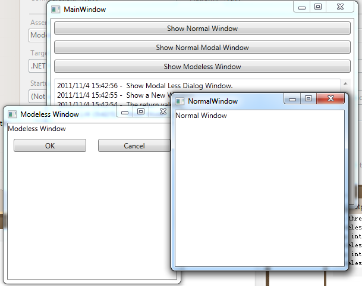

What is modeless window in system? Please refer to this article http://www.usabilityfirst.com/glossary/modeless/. In short, we could say one modal window only belongs one parent windowm and in the modal status, we could continue to active other windows, we can say the modal window is modeless.
In MFC, we could implement the modeless form via Windows APIs:
SetForegroundWindow function: http://msdn.microsoft.com/en-us/library/windows/desktop/ms633539(v=vs.85).aspx
and DestroyWindow function: http://msdn.microsoft.com/en-us/library/windows/desktop/ms632682(v=vs.85).aspx
Two links can provide helps:
But in WPF, we only have the modal dialog in default, use ShowDialog method (http://msdn.microsoft.com/en-us/library/system.windows.window.showdialog.aspx) we could show any Windows as modal dialog.
If you want to implement the modeless dialog in WPF, my sample can help you. My sample uses three APIs to control the window handle.
In the parent Window, we could start to show a modal window via the below code:
ownerHandle = (new System.Windows.Interop.WindowInteropHelper(this.Owner)).Handle; handle = (new System.Windows.Interop.WindowInteropHelper(this)).Handle; NativeMethods.EnableWindow(handle, true); NativeMethods.SetForegroundWindow(handle); ... public bool? ShowModelessDialog() { NativeMethods.EnableWindow(ownerHandle, false); new ShowAndWaitHelper(this).ShowAndWait(); return ModalDialogResult; }
ownerHandle = (new System.Windows.Interop.WindowInteropHelper(this.Owner)).Handle; handle = (new System.Windows.Interop.WindowInteropHelper(this)).Handle; NativeMethods.EnableWindow(handle, true); NativeMethods.SetForegroundWindow(handle); ... public bool? ShowModelessDialog() { NativeMethods.EnableWindow(ownerHandle, false); new ShowAndWaitHelper(this).ShowAndWait(); return ModalDialogResult; }
internal sealed class ShowAndWaitHelper
{
private readonly Window _window;
private DispatcherFrame _dispatcherFrame;
internal ShowAndWaitHelper(Window window)
{
if (window == null)
{
throw new ArgumentNullException("panel");
}
this._window = window;
}
internal void ShowAndWait()
{
if (this._dispatcherFrame != null)
{
throw new InvalidOperationException("Cannot call ShowAndWait while waiting for a previous call to ShowAndWait to return.");
}
this._window.Closed += new EventHandler(this.OnPanelClosed);
_window.Show();
this._dispatcherFrame = new DispatcherFrame();
Dispatcher.PushFrame(this._dispatcherFrame);
}
private void OnPanelClosed(object source, EventArgs eventArgs)
{
this._window.Closed -= new EventHandler(this.OnPanelClosed);
if (this._dispatcherFrame == null)
{
return;
}
this._window.Closed -= new EventHandler(this.OnPanelClosed);
this._dispatcherFrame.Continue = false;
this._dispatcherFrame = null;
}
}
internal sealed class ShowAndWaitHelper { private readonly Window _window; private DispatcherFrame _dispatcherFrame; internal ShowAndWaitHelper(Window window) { if (window == null) { throw new ArgumentNullException("panel"); } this._window = window; } internal void ShowAndWait() { if (this._dispatcherFrame != null) { throw new InvalidOperationException("Cannot call ShowAndWait while waiting for a previous call to ShowAndWait to return."); } this._window.Closed += new EventHandler(this.OnPanelClosed); _window.Show(); this._dispatcherFrame = new DispatcherFrame(); Dispatcher.PushFrame(this._dispatcherFrame); } private void OnPanelClosed(object source, EventArgs eventArgs) { this._window.Closed -= new EventHandler(this.OnPanelClosed); if (this._dispatcherFrame == null) { return; } this._window.Closed -= new EventHandler(this.OnPanelClosed); this._dispatcherFrame.Continue = false; this._dispatcherFrame = null; } }
void Window_Closing(object sender, System.ComponentModel.CancelEventArgs e) { this.Closing -= new System.ComponentModel.CancelEventHandler(Window_Closing); NativeMethods.EnableWindow(handle, false); NativeMethods.EnableWindow(ownerHandle, true); }
void Window_Closing(object sender, System.ComponentModel.CancelEventArgs e) { this.Closing -= new System.ComponentModel.CancelEventHandler(Window_Closing); NativeMethods.EnableWindow(handle, false); NativeMethods.EnableWindow(ownerHandle, true); }